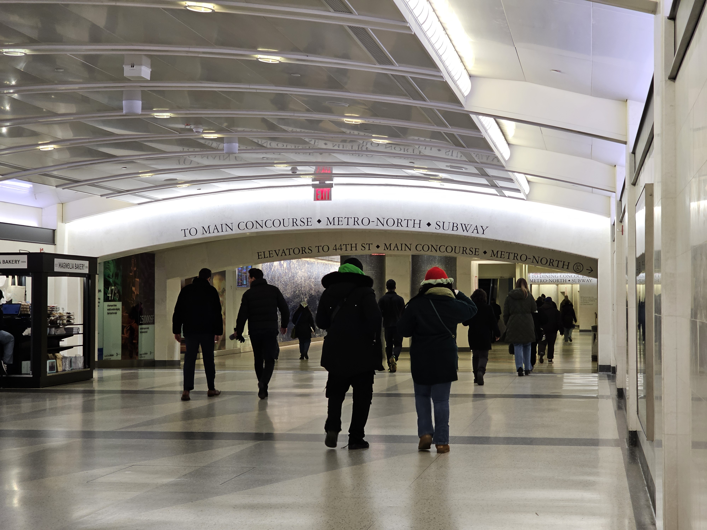
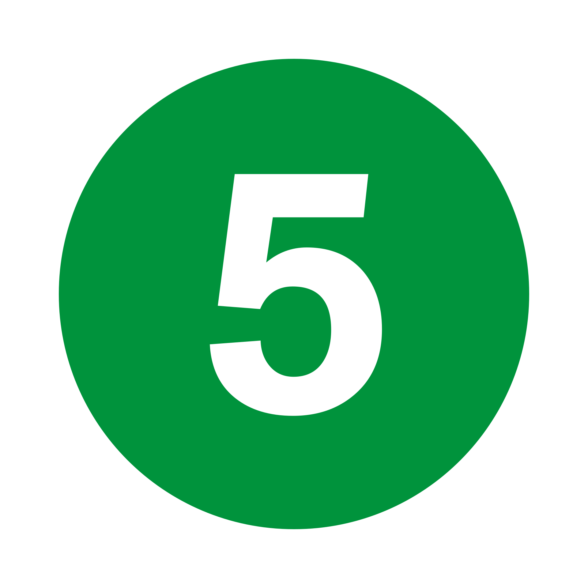
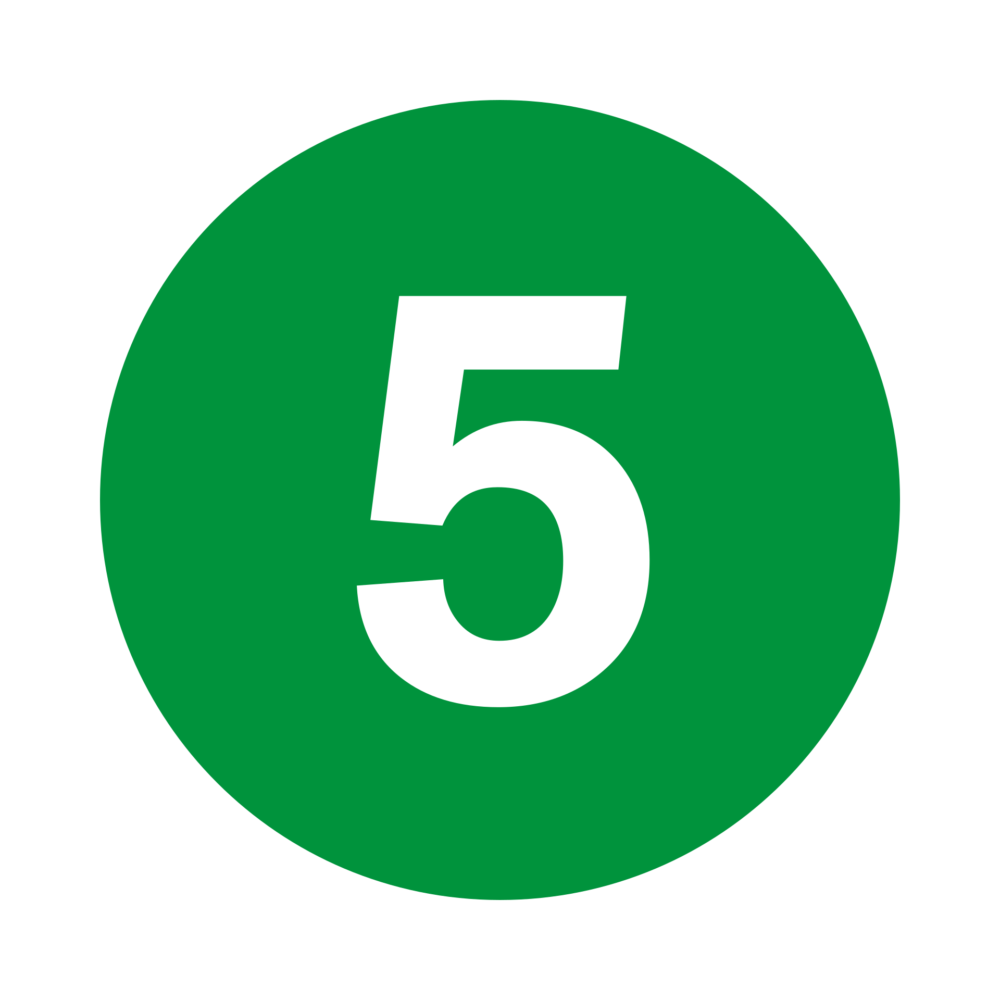

To get to Brooklyn Bridge by subway. This way is entirely ADA Friendly.
Exit from the LIRR Platform your train arrives on.
Head to the mezzanine, then walk to and take the 45th Street escalator bank up to the concourse.
Elevator: Take the elevator to the mezzanine. Then, take the elevator located between the 46th and 47th Street areas, up to the concourse.

Make your way WEST towards 43rd Street on the concourse, following signs for the subway.

The fastest way to access the subway is via One Vanderbilt:
Look for the entrance saying One Vanderbilt, Subway. These have clear glass doors.
Go through the doors, and go up the stairs, escalator or elevator (floor -2). Then walk straight to the turnstyle area. Pay and enter the subway!
From the turnstyle entrance, make a left, walk through the passageway, following signs for the  
 trains.
trains.
Once you arrive, head towards the Downtown platforms for the trains.
Board a Downtown orexpress train, take either train two stops to Brooklyn Bridge City Hall.
Get off the train and exit. Walk towards Centre Street, and stay until you reach the Brooklyn Bridge Promanade.
Cross the street, and walk onto the wooden pedestrian Promenade of the busy, touristy, iconic bridge.
Whether you walk to Brooklyn, or loop back to Manhattan, enjoy the breathtaking views of Manhattan and Brooklyn!
Some Tips and Tricks
*Before you board your LIRR train to Grand Central, board towards the front, which will bring you closest to the subway.
**If your one with ADA-needs, board towards the center of the train. This is where the elevators are located at Grand Central, giving you the shortest travel time.
At Grand Central, there is a set of elevators that will take you up from the mezzanine to the concourse.
It's located between the 46th Street and 47th Street escalator banks on the mezzanine, so look for signs.
The ADA-Friendly, faster way to access Grand Central subway from the LIRR Concourse, is by using the One Vanderbilt entrance. Shown Below:

Subway Tips
A Subway ride costs 2.90. Pay using a MetroCard, or contactless payment(OMNY Card, Credit/Debit, or your Phone).

If you need to buy a MetroCard or OMNY Card, machines are located around the turnstyle area.
From the One Vanderbilt entrance near the Shuttle train, you can reach theortrains, by walking the passageway in 3-5 minutes.
Shuttle train, you can reach theortrains, by walking the passageway in 3-5 minutes.
Expected Time Taken - Minutes
To get to the 43rd Street Concourse from the LIRR tracks, it will take you roughly 5-7 minutes depending on your speed, where you get off, and how you get there.
To go by One Vanderbilt from the 43rd Street hall to the turnstyle area, takes 3-5 minutes, depending on your speed.
To take theandtrains from Grand Central to Brooklyn Bridge, will take roughly 15 minutes.
To exit and walk onto the bridge, takes 5 minutes, depending on your speed.
Map Overview
Below is a map showing the route from Grand Central - LIRR to Brooklyn Bridge.
One Vanderbilt is shown as this is where you take the subway inside Grand Central.Although Maps may show different routes, the 4/5 trains are the easiest and quickest route!
View A Google Maps Route from Grand Central - LIRR to Brooklyn Bridge